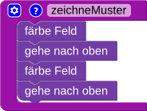
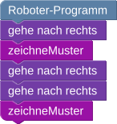
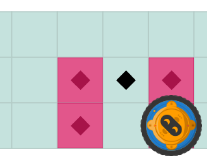

Der Roboter soll alle markierten Felder  färben. Löse die Aufgabe mit Hilfe von Funktionen.
färben. Löse die Aufgabe mit Hilfe von Funktionen.
Weitere Hinweise:
Eine Funktion zu schreiben bedeutet, einen eigenen, neuen Baustein zu erzeugen, den du dann wie einen normalen Baustein an verschieden Stellen im Programm verwenden kannst.
Hier siehst du ein Beispiel einer Funktion, die zwei Felder übereinander einfärbt und dann zur Anfangsposition zurückkehrt:

Und hier ist ein Beispiel, wie das Programm diese Funktion nutzen kann, und das Ergebnis:


Weitere Hinweise:
Eine Funktion zu schreiben bedeutet, einen abgegrenzten Teil Code zu schreiben, den du dann aus deinem Hauptprogramm aufrufen kannst.
Hier siehst du ein Beispiel einer Funktion, die zwei Felder übereinander einfärbt und dann zur Anfangsposition zurückkehrt:
def zeicheMuster():
faerbeFeld()
oben()
faerbeFeld()
unten()
Und hier ist ein Beispiel, wie das Programm diese Funktion aufrufen kann, und das Ergebnis:
rechts() zeichneMuster() rechts() rechts() zeichneMuster()
In dieser Version musst du mehrere Funktionen benutzen, um sparsam mit den Bausteinen umzugehen!
In dieser Version musst du mehrere Funktionen benutzen!
Um die Bausteinbegrenzung nicht zu überschreiben, musst du außerdem einen Schleifen-Baustein benutzen.
Um nicht zu viele Anweisungen schreiben zu müssen, solltest du eine Schleife verwenden.